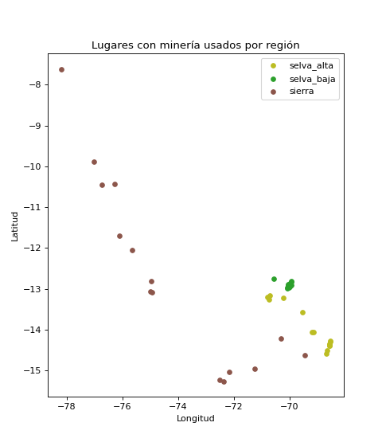

Sube una imagen satelital o de dron y dos modelos YOLO11 te dicen
en qué región está la mina y qué huella deja en el terreno.
2 modelos
97.8% precisión (región)
97.2% precisión (huella)
Corre en tu navegador
Historial en MongoDB
¿No tienes una imagen? Prueba un ejemplo:
Sube una imagen para empezar
Resultado
⚠️ Confianza baja: la imagen no se parece mucho a las de entrenamiento.
Historial de análisis
Cada análisis se guarda en MongoDB: fecha y hora, modelo, resultado,
probabilidades y datos de la imagen (nombre, tamaño, huella SHA-256). La imagen no se guarda.
Total guardado
—
Fecha y hora
Modelo
Resultado
Confianza
Imagen
Cargando…
No se pudo conectar con la base de datos.
Cómo funciona
01
Subes la imagen
Se analiza en tu dispositivo: la imagen no se envía a ningún servidor.
02
Se prepara
Se redimensiona y recorta al centro, igual que en el entrenamiento (224 o 320 px).
03
El modelo la clasifica
Una red YOLO11 en formato ONNX calcula la probabilidad de cada clase en milisegundos.
04
Se guarda el resultado
El servidor registra en MongoDB la fecha, el resultado y los datos de la imagen (sin la imagen).
Los modelos
🛰️
Región minera
YOLO11n-cls · 224 px · satélite
Selva baja Llanura amazónica (Madre de Dios): pozas y arena que reemplazan al bosque.
Selva alta Ceja de selva (Puno, Cusco): minería en quebradas y ríos entre montañas.
Sierra Andes (Ancash, Ayacucho, Arequipa): tajos, relaves y caminos en terreno árido.

45 puntos de entrenamiento · Amazon Mining Watch y Tang & Werner (2023)🚁
Huella minera
YOLO11n-cls · 320 px · dron
Montículos de cascajo Pilas de grava lavada que quedan tras extraer el oro.
Pozas mineras Pozas de agua turbia excavadas para lavar el material.
Suelo removido Terreno deforestado y removido por maquinaria.
Entrenado con ortomosaicos de dron del dataset ELDOR (minería aurífera en la Amazonía).
Limitación: ningún modelo tiene una clase “sin minería”. Cualquier imagen se asigna a una de sus tres clases, así que úsalos solo con imágenes de zonas mineras.